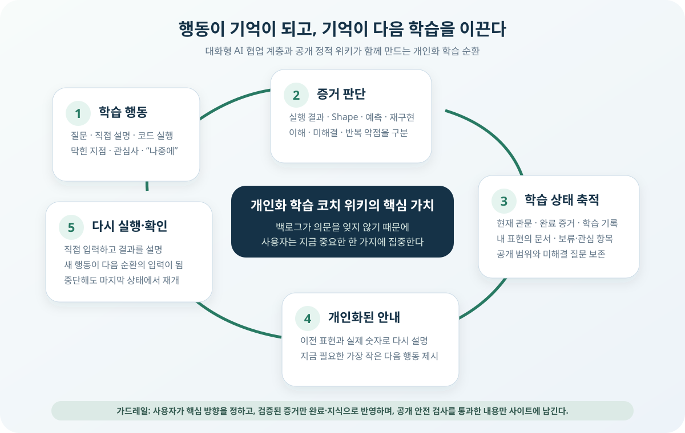
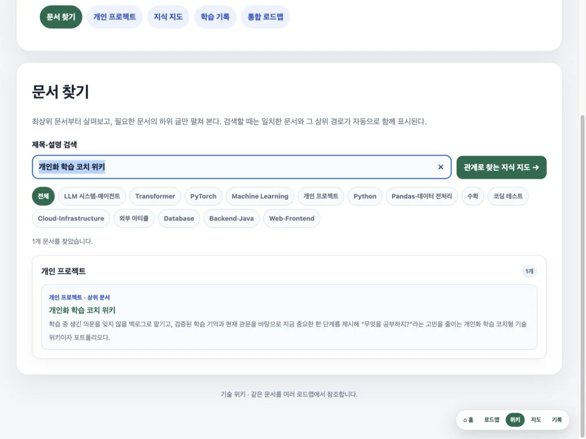
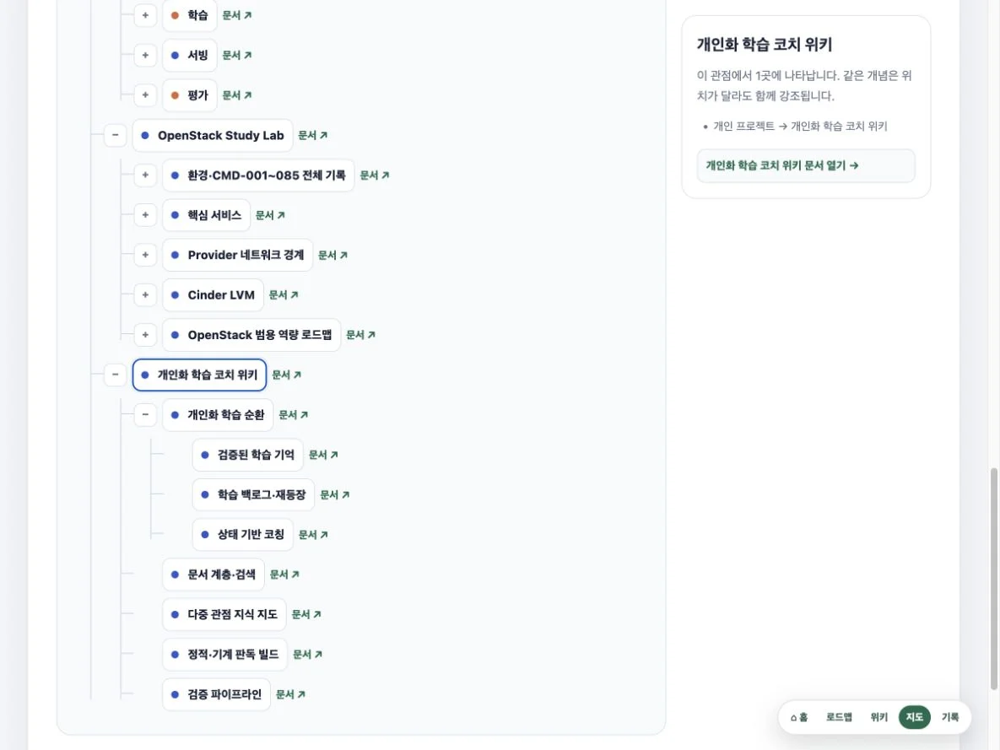
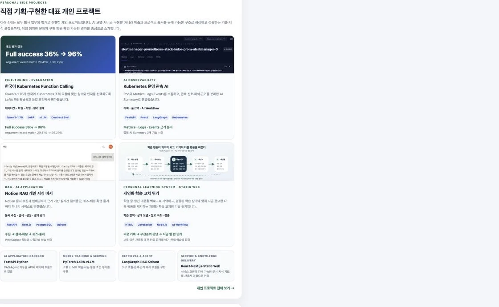

개인화 학습 코치 위키
학습 중 생긴 의문을 잊지 않을 백로그로 맡기고, 검증된 학습 기억과 현재 관문을 바탕으로 지금 중요한 한 단계를 제시해 “무엇을 공부하지?”라는 고민을 줄이는 개인화 학습 코치형 기술 위키이자 포트폴리오다.
1. 문제 정의
공부한 내용을 보관하는 데서 끝나지 않고, 내가 무엇을 이해했고 어디서 막혔으며 무엇을 다시 하고 싶은지 기억한 시스템이 다음 학습까지 이어 줄 수 있을까?
질문·실습·관심 표현 → 이해 증거와 미해결 지점 판별 → 학습 상태·내 언어로 축적 → 개인화된 설명·다음 행동 → 다시 실행·검증개인화 학습 코치 위키의 중심은 문서 수가 아니라 학습 행동이 다시 학습을 이끄는 닫힌 순환이다. 사용자가 직접 설명하거나 코드를 실행한 결과, 반복해서 막힌 지점, “나중에 다시 하자”라고 남긴 관심사를 서로 다른 상태로 보존한다. 다음 세션에서는 이 기록을 읽어 이미 끝낸 설명을 반복하지 않고 현재 관문에서 이어가며, 사용자가 이해했던 표현·숫자·Tensor Shape을 바탕으로 모르는 부분을 다시 설명한다.
여기서 기록은 단순 보관이 아니라 지금 하지 않아도 잊히지 않는다는 신뢰를 만든다. 새 의문을 발견할 때마다 즉시 학습 방향을 바꾸는 대신 백로그에 보류 이유·재등장 조건·완료 증거를 남긴다. 사용자는 모든 공부를 머릿속으로 붙들 필요가 없어지고, 우선순위가 정리된 현재 관문에 집중할 수 있다.
문서 계층·검색·지식 지도·정적 빌드·감사는 이 학습 순환을 오래 유지하고 공개 가능한 포트폴리오 증거로 전달하기 위한 기반 계층이다.
2. 행동이 다음 학습으로 돌아오는 개인화 학습 순환
대화형 AI 협업 계층이 사용자의 행동을 해석하고, 저장소의 학습 상태와 문서를 장기 기억으로 사용하며, 그 기억을 다음 설명과 행동으로 되돌린다.

행동을 학습 신호로 읽는다
- 질문, 자신의 말로 한 설명, 결과 예측과 코드 실행을 구분한다.
- 막힌 개념과 반복 약점, 명시적으로 미룬 관심사를 별도 상태로 남긴다.
- “했어”라는 메시지만 믿지 않고 저장된 코드·출력·Traceback·Shape을 확인한다.
증거가 있는 것만 축적한다
- 설명·예측·재구현·재실행 중 하나 이상의 증거가 있어야 이해 완료로 본다.
- 검증된 인사이트는 사용자의 한국어 표현과 실제 숫자·Shape을 보존한다.
- 아직 묻고 있는 내용과 불확실한 추측은 완료 지식처럼 쓰지 않는다.
기억이 설명을 개인화한다
- 이미 이해한 내용은 처음부터 반복하지 않고 마지막 학습 지점에서 이어간다.
- 새 개념을 과거에 직접 다룬 코드·숫자·표현에 연결해 다시 설명한다.
- 현재 구현을 막는 선수지식만 보강한 뒤 원래 학습 흐름으로 돌아온다.
기억이 다음 행동을 정한다
- 현재 관문과 완료 조건을 기준으로 가장 작은 다음 실습을 제시한다.
- 장기 관심사는 잃지 않되 현재 핵심 여정을 임의로 대체하지 않는다.
- 중단 뒤에도 현재 위치·다음 행동·남은 증거를 읽어 같은 지점에서 재개한다.
3. 무엇을 공부했는지뿐 아니라, 어떤 상태인지 기억한다
학습 기록을 날짜별 로그 하나로 축소하지 않고 현재 방향, 완료 증거, 아직 모르는 것과 다시 꺼낼 조건까지 구조화한다.
검증된 지식과 내 언어
관련 문서와 대화를 비교해 새로 이해한 부분만 추가한다. 당시 사용한 표현, 구체적인 입력값과 Shape, 실수와 교정을 남겨 나중에 같은 언어로 복원할 수 있게 한다.
미해결 상태도 보존
아직 이해하지 못한 질문, 재현되지 않은 출력, 근거가 사라진 과거 학습은 완료로 포장하지 않는다. 미확인·보류 상태와 다시 검증할 조건을 함께 남긴다.
실제 상태 화면학습 기록핵심 여정과 보류 항목AI·ML 통합 현황
4. 기록을 보여 주는 데서 끝나지 않는 상태 기반 코칭
현재 학습 상태는 대시보드 장식이 아니라 다음 대화와 실습의 입력이다.
백로그가 “나중에 반드시 다시 검토된다”는 확신을 주기 때문에, 사용자는 모든 의문을 지금 해결해야 한다는 압박에서 벗어나 현재 가장 중요한 학습 한 가지에 집중할 수 있다. 우선순위 판단을 매번 처음부터 다시 하는 시간이 줄어드는 것이 이 기능의 직접적인 사용자 가치다.
중단 지점에서 이어가기
현재 관문과 직전 완료 증거를 먼저 읽고, 이미 끝낸 내용을 다시 시작하지 않는다. 다음 행동은 현재 관문을 닫는 데 필요한 최소 단계로 제한한다.
나에게 맞는 설명으로 복원하기
모르는 것이 생기면 일반적인 교과서 설명만 반복하지 않고, 과거에 직접 만든 코드와 이해한 표현을 출발점으로 연결한다.
집중을 잃지 않게 하기
새 관심사는 보관하되 핵심 여정을 밀어내지 않는다. 기록이 사라지지 않는다는 신뢰를 바탕으로 “이것도 지금 해야 하지 않을까?”라는 불안을 내려놓고, 반복 약점은 실제 blocker가 될 때, 장기 관심은 사용자가 다시 선택할 때 꺼낸다.
학습을 멈추지 않게 하기
막연한 장기 계획 대신 즉시 실행할 수 있는 한 단계와 완료 기준을 제시한다. 작은 검증이 끝날 때마다 상태가 갱신되어 다음 진입 비용을 낮춘다.
이 코칭은 사용자를 대신해 장기 목표를 임의로 바꾸는 완전 자율 시스템이 아니다. 사용자가 정한 핵심 방향과 공개 범위 안에서 LLM이 현재 관문·완료 증거·실제 blocker·보류 항목을 비교해 우선순위를 제안하며, 로드맵 방향 변경은 명시적인 요청이 있을 때만 기록한다.
5. 사용자가 주도한 범위와 AI 협업 경계
사용자가 주도한 것
- 어떤 문제를 해결할지와 공개할 정보의 범위
- 학습 이해를 완료로 인정하는 검증 규칙
- 홈·문서·프로젝트·로드맵의 정보 구조와 우선순위
- 최종 화면과 기록이 의도에 맞는지에 대한 검수
AI를 활용한 것
- 대화·실습 결과와 저장된 학습 상태를 비교해 다음 단계 제안
- 검증된 이해를 사용자의 표현으로 문서화하고 관련 문서에 연결
- 명시된 구조에 맞춘 HTML·CSS·JavaScript 구현과 공개 범위 필터
- 링크·정적 fallback·기계 판독 산출물·브라우저 화면 교차 검토
사용자가 문제 정의·핵심 방향·공개 경계·학습 검증 규칙을 정하고, AI 협업 계층은 그 정책과 누적 상태 안에서 기억·설명·다음 행동·문서화를 연결한다. AI가 사용자의 장기 목표를 임의로 바꾸거나 근거 없이 완료를 판정하지 않는다. 따라서 이 프로젝트를 CMS(콘텐츠 관리 시스템), 다중 사용자 SaaS(서비스형 소프트웨어), 완전 자율 학습 시스템 또는 모든 코드를 혼자 손으로 작성한 결과물로 소개하지 않는다.
6. 문서 계층과 검색
문서를 평면 목록으로만 나열하지 않고 상위 문서 → 하위 문서 → 하위 하위 문서 순서로 렌더링하며, 검색 결과에도 일치 문서의 상위 경로를 함께 남긴다.

7. 다중 관점 지식 지도
같은 개념을 주제별·실행 흐름별·Transformer 구조별·프로젝트별 관점에서 다시 배치하되, 공통 concept key로 같은 개념임을 연결한다.

8. 정적·기계 판독 빌드
별도의 서버 애플리케이션이나 CMS 없이도 공개 HTML과 같은 내용을 검색 엔진과 도구가 발견할 수 있도록 정적 산출물을 생성한다.
빌드는 홈의 대표 프로젝트와 기술 분류, 문서 찾기 계층, 지식 지도의 정적 관계 목록, 각 문서의 canonical·description·JSON-LD, sitemap과 JSON manifest를 갱신한다. 생성된 블록은 사람이 화면마다 다시 입력하지 않고 공통 원본에서 파생한다.
9. 검증 파이프라인
빌드 성공만으로 완료하지 않고 링크·계층·메타데이터·정적 fallback·공개 안전·화면 동작을 서로 다른 검사로 확인한다.
자동 검사
- 로컬 링크와 fragment 유효성
- 문서 부모 관계·깊이·순서
- canonical·JSON-LD·sitemap·manifest 일관성
- JavaScript 데이터와 정적 fallback의 동일성
- 프로젝트 원본과 홈·목록·지도·시각 자산의 이름·URL·기능 구간 동기화
- 공개하면 안 되는 로컬 경로·자격 정보·비공개 파일 패턴
브라우저 검사
- 데스크톱과 모바일 카드 배치
- 프로젝트 카드·검색·지식 지도 이동과 상호작용
- 콘솔 오류와 이미지 대체 텍스트
- JavaScript가 없어도 핵심 콘텐츠가 남는 정적 fallback

10. 현재 상태와 한계
현재 확인 가능한 상태
- 질문·실습 증거를 현재 관문·완료 조건·다음 행동과 연결하는 학습 상태 제공
- 검증된 이해·학습 기록·보류 관심사를 세션 사이에 이어서 활용
- 공개 정적 HTML로 홈·기술 위키·프로젝트 허브·학습 기록 제공
- 문서 계층 검색·지식 지도·기계 판독 산출물과 자동 감사 제공
한계
- 대화형 코칭과 자동 기록은 정적 사이트 단독 기능이 아니라 AI 협업 환경과 저장소 규칙이 함께 있어야 동작한다.
- 사용자 계정·다중 사용자 상태·협업 편집을 제공하는 SaaS는 아니다.
- 학습 완료는 단순 활동량이 아니라 사용자와의 실습·설명 증거를 기준으로 판단하므로 완전 무인 자동화가 아니다.
- 장기 학습 효과와 운영 트래픽을 비교한 정량 서비스 지표는 아직 없다.
이 프로젝트의 강점은 문서 규모 자체가 아니라, 한 사람의 행동과 이해를 장기 상태로 연결해 기억 → 설명 → 다음 행동 → 새 증거의 순환을 유지하고, 그 과정을 공개 가능한 기술 증거로 전환한다는 데 있다.